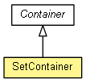

org.eclipse.net4j.util.container
Class SetContainer<E>
java.lang.Object
 org.eclipse.net4j.util.event.Notifier
org.eclipse.net4j.util.lifecycle.Lifecycle
org.eclipse.net4j.util.lifecycle.ShareableLifecycle
org.eclipse.net4j.util.container.Container<E>
org.eclipse.net4j.util.container.SetContainer<E>
org.eclipse.net4j.util.event.Notifier
org.eclipse.net4j.util.lifecycle.Lifecycle
org.eclipse.net4j.util.lifecycle.ShareableLifecycle
org.eclipse.net4j.util.container.Container<E>
org.eclipse.net4j.util.container.SetContainer<E>
- All Implemented Interfaces:
- IContainer<E>, INotifier, ILifecycle, ILifecycle.DeferrableActivation
- public class SetContainer<E>
- extends Container<E>

An implementation of a container that stores its elements in a set.
- Since:
- 3.2
- See Also:
IContainerSet,
IContainerSortedSet
| Methods inherited from class org.eclipse.net4j.util.lifecycle.Lifecycle |
activate, checkActive, checkArg, checkArg, checkInactive, checkNull, checkState, checkState, deactivate, deferredActivate, doActivate, doAfterActivate, doBeforeActivate, doBeforeDeactivate, doDeactivate, dump, getLifecycleState, isActive, isDeferredActivation, toString |
SetContainer
public SetContainer(Class<E> componentType)
SetContainer
public SetContainer(Class<E> componentType,
Set<E> set)
getComponentType
public final Class<E> getComponentType()
isEmpty
public boolean isEmpty()
- Specified by:
isEmpty in interface IContainer<E>- Overrides:
isEmpty in class Container<E>
getElements
public E[] getElements()
clear
public void clear()
addElement
public boolean addElement(E element)
removeElement
public boolean removeElement(E element)
getSet
protected Set<E> getSet()
sortElements
protected E[] sortElements(E[] array)
validateElement
protected boolean validateElement(E element)
Copyright (c) 2004 - 2012 Eike Stepper (Berlin, Germany) and others.